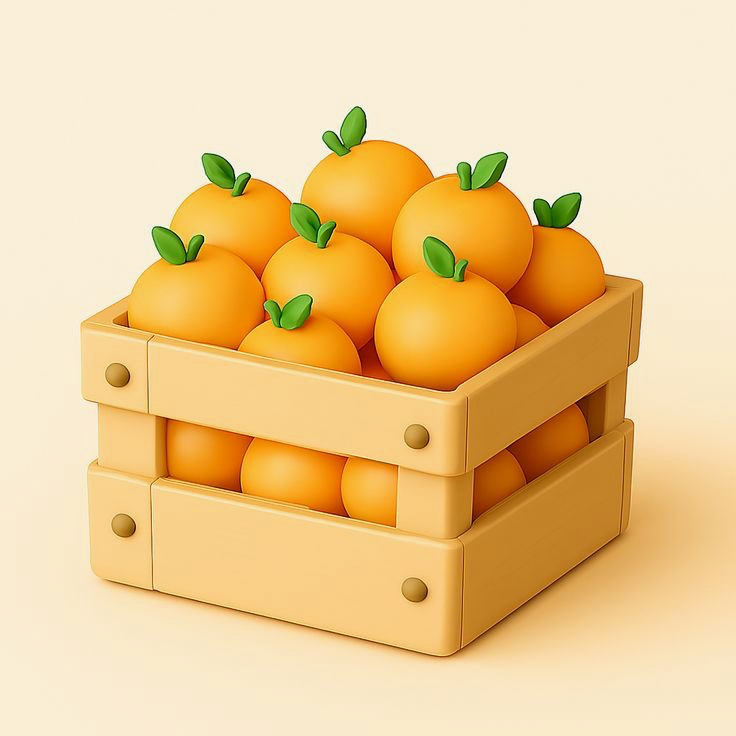

comida boa não é lixo
Comida boa perto de você. De graça ou bem barata.
Mercados e feiras do Paraíso avisam quando sobra fruta, verdura e legume. Você reserva e busca perto de casa.
- Não precisa de documento
- Funciona no WhatsApp
- Pontos com placa perto de casa

DE GRAÇAcomo funciona
Três passos. Só isso.
-
1
O mercado ou a feira avisa
Sobrou comida boa? Eles colocam na Rede de Prato.
-
2
Você reserva
Escolhe o que quer no celular ou pelo WhatsApp. Fica guardado para você.
-
3

Busca no ponto da placa
Vá até o ponto com esta placa, no dia e na hora marcados.
todo mundo ganha
A comida chega em quem precisa
-
Famílias
Fruta, verdura e legume fresco, de graça ou com desconto, perto de casa.
-
Supermercados
Doam para uma ONG cadastrada, com tudo documentado, e ganham o Selo de Parceiro.
-
Feirantes
Avisam a xepa com um toque, sem largar a banca. Nada vai para o lixo comum.
-
O bairro
O que não dá mais para comer vira adubo para as hortas comunitárias.
sem celular? sem problema
Procure esta placa
Cada ponto de entrega tem a placa da Rede de Prato com os dias e horários. É só chegar.
Ponto Paraíso
Rua Desembargador Eliseu Guilherme, 88 – Paraíso
Terça e quinta, das 16h às 18h
por que isso importa
Tem comida indo para o lixo
de alimento das feiras de São Paulo vão para o lixo por ano.
Fonte: Jornal da USP (2018)é o que uma só loja de hortifrúti do Paraíso perde em descarte.
Fonte: entrevista da equipe (15/11/2026)funcionam na cidade, de terça a domingo. Toda xepa pode virar prato.
Fonte: Prefeitura de SP (2025)para mercados e feiras
Sobrou? A gente leva até quem precisa.
- Doe para uma ONG cadastrada, com registro de cada doação
- Registre um lote em menos de 1 minuto, ou avise a xepa com um toque
- Veja quantos quilos você salvou do lixo e mostre o Selo de Parceiro